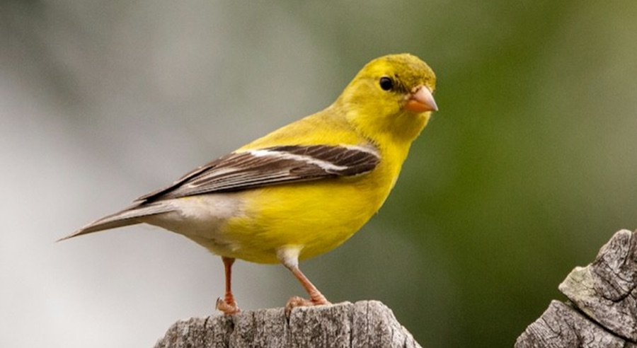
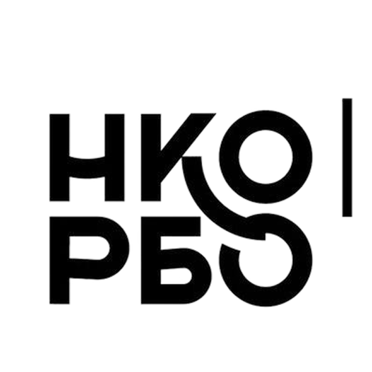
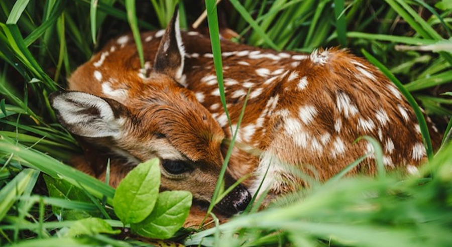
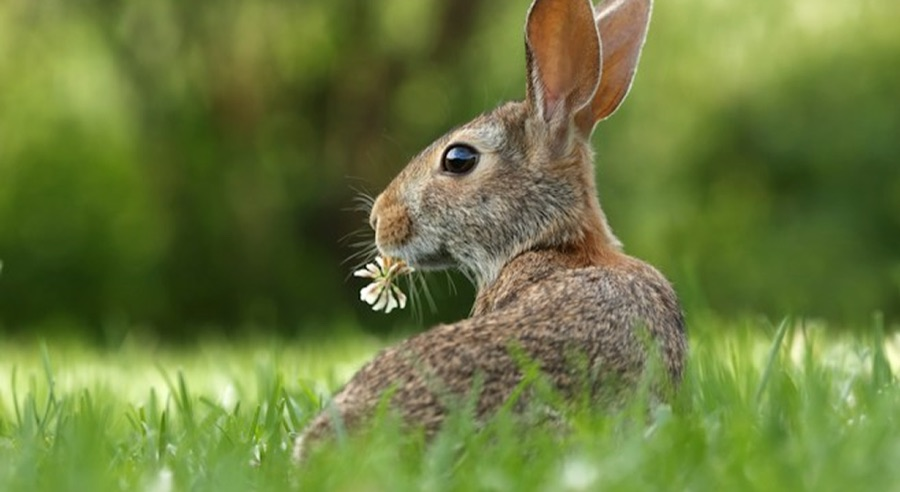

Птицы
+7 (999) 828-94-62

Расскажите, что случилось. За 1–2 минуты подскажем, нужна ли помощь, чего не делать и кому написать рядом
Не всегда найденного зайчонка, птенца или другого дикого животного нужно забирать из природы. Иногда родители находятся рядом, а вмешательство человека может, наоборот, навредить.
Особенно крупных животных и хищников
Неподходящая еда может убить
Сначала спросите специалиста
Отойдите и звоните 112
Линии Российского биологического общества. Специалисты часто заняты с животными и могут ответить не сразу — тогда напишите им

+7 (999) 828-94-62

+7 (916) 602-39-60

+7 (925) 841-04-61
Помощник подберёт центр рядом с вами и подскажет, что отправить специалисту
Подобрать специалистаЭто некоммерческая организация, которая объединяет специалистов в области биологии, ветеринарии, зоотехнии, экологии, педагогики и права, а также опытных волонтёров и людей, которым небезразлична судьба животных
Охвачены работой по спасению и реабилитации диких животных
Получают заботу и проходят реабилитацию прямо сейчас
Объединились вокруг общества, помогая животным по всей стране
Помощь диким животным держится не только на специалистах и волонтёрах. За каждым спасением стоит инфраструктура: транспорт, помещения, корм, оборудование и люди, готовые быстро приехать туда, где нужна помощь.
Реабилитационный центр РБО принимает травмированных, ослабленных и осиротевших диких животных и готовит их к возвращению в природу, следуя принципу, что дикий зверь должен оставаться диким
Реабилитационный центр РБО принимает травмированных, ослабленных и осиротевших диких животных и готовит их к возвращению в природу, следуя принципу, что дикий зверь должен оставаться диким
Реабилитационный центр РБО принимает травмированных, ослабленных и осиротевших диких животных и готовит их к возвращению в природу, следуя принципу, что дикий зверь должен оставаться диким
Помочь проектам Российского биологического общества может каждый
Пожертвовать можно прямо на Авито, разовым платежом на любую сумму. Деньги идут на содержание и реабилитацию животных.
У РБО более 4 400 волонтёров по всей России. Можно присоединиться к команде и помогать в проектах организации
Реабилитационным центрам постоянно нужны расходные материалы, оборудование, корм и другие вещи для содержания животных
Чем больше людей знают, как правильно помогать диким животным, тем выше шанс, что животное получит действительно необходимую помощь
Расскажите помощнику, что случилось: он подскажет первые шаги и даст контакт специалиста рядом.
Получить помощьМеню прототипа · не часть продукта